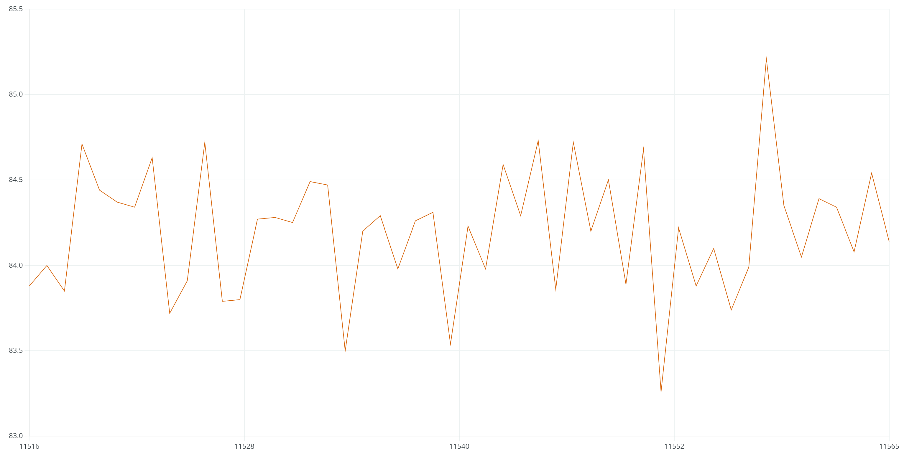

Task2: Accelerometer
First we use the following equations the convert Accelerometer data into pitch and roll.
In Artemis it goes like this:
pitch_a = atan2(myICM.accY(),myICM.accZ())*180/M_PI;
roll_a = atan2(myICM.accX(),myICM.accZ())*180/M_PI;
To demonstrate the accuracy of Acc data, we show the output at {-90, 0, 90} degrees for pitch and roll respectively.
Picture1 pitch & roll @ 0 degree
Picture2 pitch @ -90 degree

Picture3 pitch @ 90 degree
Picture4 roll @ -90 degree
Picture5 roll @ 90 degree
We can see that there is noise in the data but generally accurate.
Upon applying linear regression to the three-point dataset, we observe a minor offset and a slope coefficient below 1.


By manipulating the equations in the graph, we can derive the conversion factor. However, this data exhibits significant randomness and is heavily influenced by the desk's incomplete horizontal/vertical alignment during the experiment.
Low Pass Filter
The accelerometer is noisy. To address this issue by using low pass filter, we first to analyze the noise in the frequency spectrum
Here is a helpful reference on Fourier Transform.
Take pitch data as an example, I collected nearly a thousand data points while the board was stationary. The collected data and the data after Fourier transformation are shown in the graph.

From the results, it appears that the intensity of the noise is much lower than the intensity of the signal. Perhaps there is no need to add another low pass filter.
In fact, by checking the datasheet, we found that the IMU has a built-in low-pass filter. However, upon closer examination, I believe that this function is not enabled in the mode we are using.


Anyway, we can still add an additional low-pass filter to see its effect.
Take pitch as an example, the implementation of a low pass filter is like this:
const float alpha = 0.2;
pitch_a_LPF[1] = alpha*pitch_a + (1-alpha)*pitch_a_LPF[0];
pitch_a_LPF[0] = pitch_a_LPF[1];
We have a list, pitch_a_LPF[], of two doubles, to record the previous and present pitch data, and implement LPF by adjusting the parameter alpha.
Mathematically, the cutoff frequency is defined as the frequency at which the output power of the filter is reduced to half of its maximum value. In terms of the transfer function of the filter, the cutoff frequency is the frequency at which the magnitude response is 0.707 times the maximum magnitude. Here we set alpha=0.2.
This is the result of pitch data after applying the low pass filter:

In this experiment I recorded around 1000 data points. Starting from 500 I added some vibration to the Artemis board. In my opinion, the figure in the frequency spectrum is pretty decent.
By contrast, the roll data was recorded simultaniously but without a low pass filter. Shown as below.